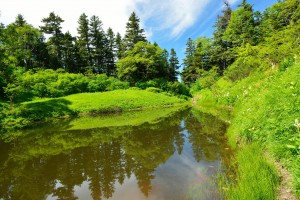

Найдено самое чистое озеро в мире!

В США измерили загрязнённость озера Крейтер, и оно составило 3 грамма на 6 тонн воды
Это озеро стало самым чистым в мире и считается чище Байкала. А Байкал это второе по чистоте озеро в мире.

Автор № 3232333
Дата публикации 9 ноября 2003 года
Раздел: Природы